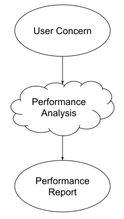

- Start
- Filters
- Query
- Analysis Method
- Analysis Configuration
- Finish
User Concern Definition

This is the tool.
It guides you through the creation of a User Concern.
A User Concern formulates an interest in attributes of a software system.
It can be used to configure a performance analysis tool, which retrieves metrics from an analysis experiment.
utilizes such results in combination with the User Concern to create a performance report.
In the following steps you will be asked to fill out input fields.
Choose the options according to your question you have about the performance of a system.
This helps us to define a useful User Concern.
The process you will perform is described in the image on the right side.
If you are ready, then proceed by either clicking the navigation arrows
or using the control buttons on the bottom.
Filters
Filters help to categorize the User Concern. This way you will get a exactly the options you need.
Do you want to perform an analysis or generate a report from existing data?
A User Concern can have one of two following types.
-
A User Concern from the type Analysis is able to configure a performance analysis tool.
If can also create a performance report with this type. -
A User Concern from the type Report needs existing data from an appropriate analysis tool.
This type will not help you with the configuration of an analysis tool.
Query
- A query defines your interest in a metric and can be configured with additional parameters.
- The query will represent your question to a software system.
- The User Concern is able to understand this question and will answer this with the results of the performance analysis.
Choose a query that suits your needs the most.
Analysis Method
- The query you selected represents a typical request from load testing.
- To generate load on your system it is necessary to configure a load testing framework.
- In the following you are given a selection of such frameworks. Please select one of them and then proceed.
Select a Analysis Method.
Analysis Configuration
Are you a performance analysis expert?
If you check this option you will get more advanced options to configure a analysis.
As an expert you should have performed at least more than one performance analysis already.
Loadtest Configuration
Here you see the configurations to create a load test.
A load test produces a virtual created number of users which send requests to the given domain.
| Location: | * | |||||
| Load (number of Users): | * | Duration (s): | * | |||
| * These fields are necessary. |
JMeter Configuration
The following configurations help to define attributes of the analysis experiment. Each analysis tool takes a different approach. Here you can see the settings for JMeter.
| Delay (s): | ||||||
| Expert Selection: | ||||||
| Loops: | Loop forever: | |||||
| Method: | Follow Redirects: | |||||
| Ramp up time (s): | Ramp down time (s): | |||||
| * These fields are necessary. | ||||||
Experiment Configuration
Locust Configuration
The following configurations help to define attributes of the analysis experiment. Each analysis tool takes a different approach. Here you can see the settings for Locust.
Analysis Experiment
| Minimum Wait Time (s): | * | Maximum Wait Time (s): | * | |||
| * These fields are necessary. |
Closing Steps
Analysis
JMeter will be your analysis tool. Download the following file, then proceed with the next steps.
If you have downloaded the file you are ready to perform a loadtest evaluation of your system.
Install JMeter with the following instructions.
Open a terminal, then type the following command into the terminal.
jmeter -n -t jmeter_experiment.jmx -l jmeter_experiment_result.csv
Locust will be your analysis tool. Download the following file, then proceed with the next steps.
If you have downloaded the file you are ready to perform a loadtest evaluation of your system.
Install locust with the following instructions.
Open a terminal, then type one of the following command into the terminal.
locust -f locust_experiment.py --csv=locust --no-web
User Concern
For the last step you have to get the User Concern by downloading it.
If you don't mind to keep your User Concern, you can continue by clicking here.